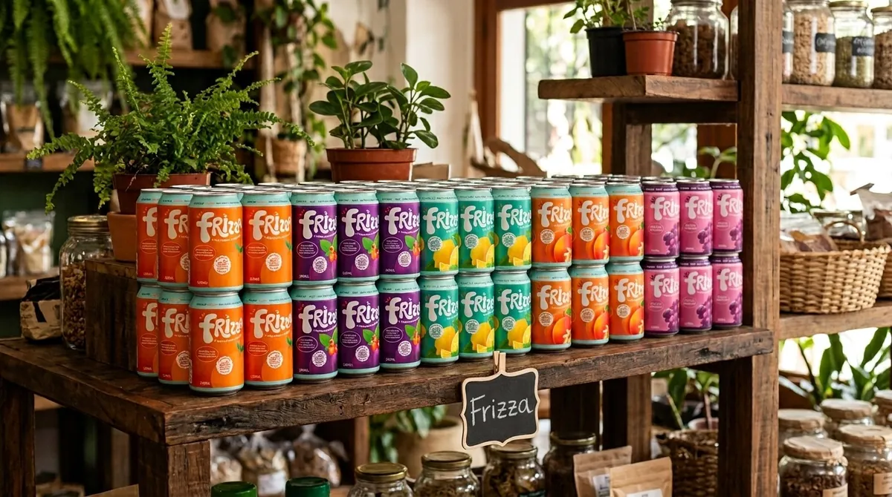
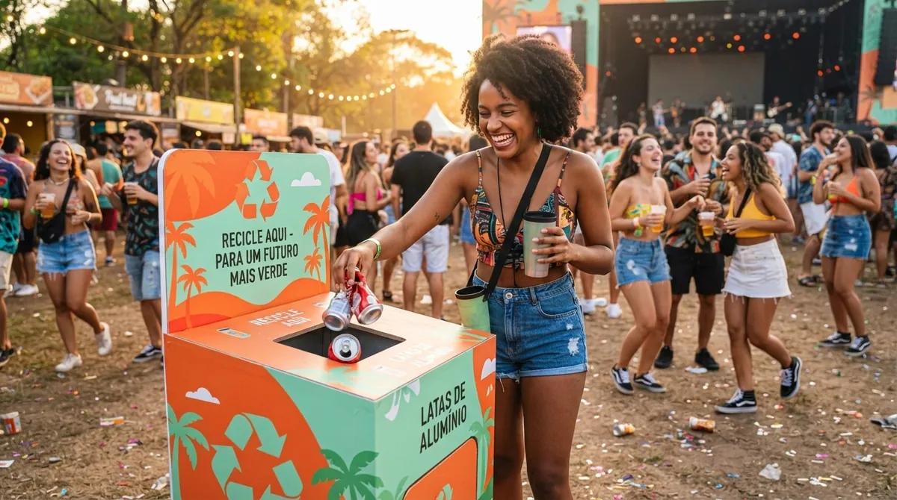
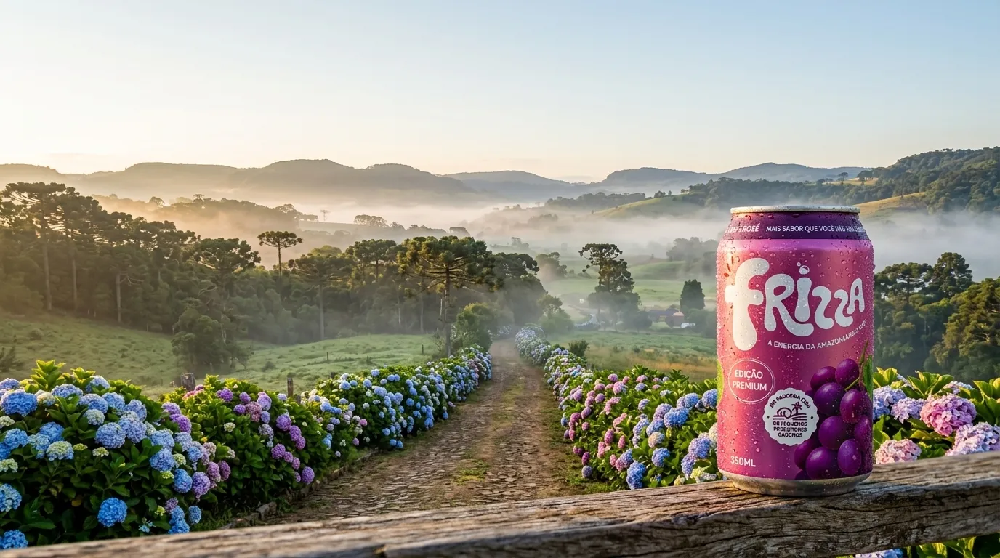

Mais de 200 pontos no Sul e Sudeste
Onde encontrar
Procure pela sua cidade ou estado e descubra a geladeira mais próxima com FRIZZA. Prefere receber em casa? Compre aqui no site e a gente entrega no Brasil todo.

Buscar ponto de venda
23 pontos de venda encontrados
- Empório
Empório Araucária
Curitiba · PR
Rua das Araucárias, 120 · Centro
Abrir no Google Maps - Café
Café Pinhão
Curitiba · PR
Alameda dos Pinheirais, 455 · Batel
Abrir no Google Maps - Mercado
Mercado Verde Vivo
Curitiba · PR
Av. das Hortas, 2.010 · Água Verde
Abrir no Google Maps - Empório
Armazém Pé Vermelho
Londrina · PR
Rua do Café, 88 · Centro
Abrir no Google Maps - Mercado
Mercadinho Ilha Natural
Florianópolis · SC
Rua da Lagoa, 301 · Lagoa da Conceição
Abrir no Google Maps - Restaurante
Bistrô Maré Alta
Florianópolis · SC
Av. das Gaivotas, 77 · Jurerê
Abrir no Google Maps - Empório
Empório do Vale
Blumenau · SC
Rua dos Enxaimeis, 540 · Centro
Abrir no Google Maps - Loja oficial
Loja Conceito FRIZZA
Gramado · RS
Av. das Hortênsias, 1.800 · Centro
Abrir no Google Maps - Café
Café da Serra
Gramado · RS
Rua do Lago Negro, 210 · Planalto
Abrir no Google Maps - Empório
Empório Redenção
Porto Alegre · RS
Rua dos Ipês, 1.020 · Bom Fim
Abrir no Google Maps - Café
Café Guaíba
Porto Alegre · RS
Rua do Pôr do Sol, 64 · Cidade Baixa
Abrir no Google Maps - Empório
Casa do Vale dos Vinhedos
Bento Gonçalves · RS
Estrada dos Vinhedos, km 4
Abrir no Google Maps - Mercado
Mercado Serra Viva
Caxias do Sul · RS
Rua das Uvas, 900 · São Pelegrino
Abrir no Google Maps - Empório
Empório Vila Madalena
São Paulo · SP
Rua dos Grafites, 233 · Vila Madalena
Abrir no Google Maps - Mercado
Mercado Orgânico Pinheiros
São Paulo · SP
Rua das Feiras, 1.440 · Pinheiros
Abrir no Google Maps - Café
Café Paulista Natural
São Paulo · SP
Alameda Central, 15 · Bela Vista
Abrir no Google Maps - Empório
Armazém Barão
Campinas · SP
Av. dos Estudantes, 702 · Barão Geraldo
Abrir no Google Maps - Quiosque
Quiosque Leblon Natural
Rio de Janeiro · RJ
Orla do Leblon, posto 11
Abrir no Google Maps - Mercado
Hortifruti Botafogo Bem
Rio de Janeiro · RJ
Rua das Palmeiras, 410 · Botafogo
Abrir no Google Maps - Empório
Empório Icaraí
Niterói · RJ
Rua da Praia, 98 · Icaraí
Abrir no Google Maps - Café
Café Savassi
Belo Horizonte · MG
Rua dos Baristas, 350 · Savassi
Abrir no Google Maps - Empório
Empório Pampulha
Belo Horizonte · MG
Av. da Lagoa, 1.900 · Pampulha
Abrir no Google Maps - Mercado
Mercado Serra do Curral
Belo Horizonte · MG
Rua das Montanhas, 77 · Serra
Abrir no Google Maps
Clique em um ponto de venda para ver no mapa
Loja Conceito FRIZZA Av. das Hortênsias, 1.800 · Centro — Gramado · RS Abrir no Google MapsAo vivo e a cores
Encontre a FRIZZA em festivais e feiras
Degustação gelada, música boa e gente legal. Confira onde a gente vai estar este ano.
Janeiro · Florianópolis · SC
Festival Verão Orgânico
Praia, música ao vivo e estande FRIZZA com degustação gelada dos 5 sabores.

Junho · São Paulo · SP
Feira Brasil Orgânico
Onde levamos o prêmio de Melhor Refrigerante Artesanal em 2023. Vem brindar com a gente!

Julho · Gramado · RS
Festival de Inverno da Serra
Em casa! Lançamentos de safra da Uva Rosé, oficinas de mocktail e muita bolha.